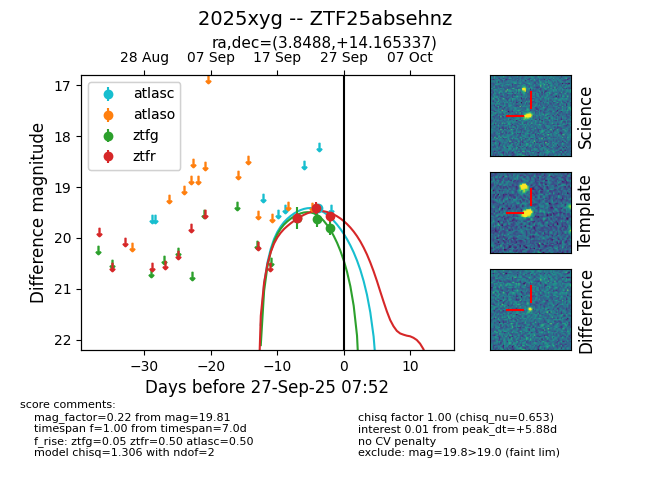
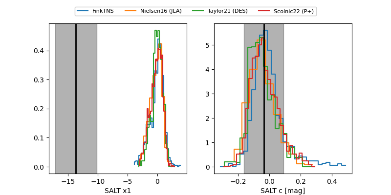

FINK: ZTF25absehnz
Lasair: ZTF25absehnz
ALeRCE: ZTF25absehnz
TNS: 2025xyg
YSE: 2025xyg
ZTF25absehnz (ztf,fink)
2025xyg (tns,yse)
equatorial (ra, dec) = (3.8488,+14.16534)
galactic (l, b) = (109.8686,-47.79012)


last atlasc=19.41, ztfg=19.81, ztfr=19.58
1 atlasc, 3 ztfg, 3 ztfr detections